Уроки
Часть 3: Свойства Flexbox
Свойства для Родителя (flex контейнер)
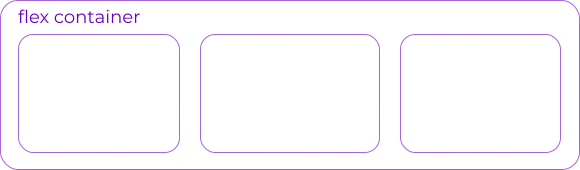
display
Определяет flex контейнер; inline или block в зависимости от заданного значения. Включает flex контекст для всех потомков первого уровня.
.container {
display: flex;
}
Имейте в виду: CSS-столбцы columns не влияют на flex контейнер.
flex-direction
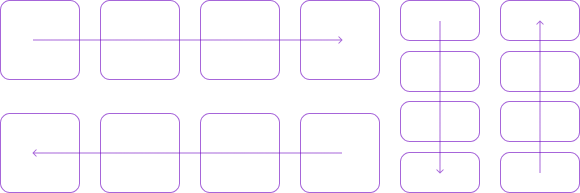
Устанавливает основную ось, таким образом определяя направление flex элементов, помещаемых в flex контейнер. Flexbox — это (помимо дополнительной упаковки) концепция однонаправленного макета. Думайте о flex элементах, как о первичных раскладках в горизонтальных рядах или вертикальных столбцах.
.container {
flex-direction: row | row-reverse | column | column-reverse;
}
- row (по умолчанию): слева направо в ltr; справа налево в rtl
- row-reverse: справа налево ltr; слева направо в rtl
- column: так же, как и row но сверху вниз
- column-reverse: то же самое, row-reverse но снизу вверх
flex-wrap
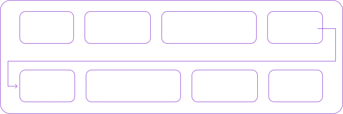
По умолчанию гибкие элементы будут пытаться уместиться на одной строке. Вы можете изменить это и позволить элементам переходить на новую строку по мере необходимости с помощью этого свойства.
.container {
flex-wrap: nowrap | wrap | wrap-reverse;
}
- nowrap (по умолчанию): все flex элементы будут в одной строке
- wrap: flex-элементы будут перенесены на несколько строк сверху вниз.
- wrap-reverse: flex-элементы будут перенесены на несколько строк снизу вверх.
flex-flow (Применяется к: родительскому элементу flex-контейнера)
Это сокращение для flex-direction и flex-wrap свойств, которые вместе определяют основные и поперечные оси flex контейнера. Значением по умолчанию является row nowrap.
flex-flow: <‘flex-direction’> || <‘flex-wrap’>
justify-content
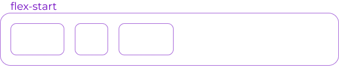
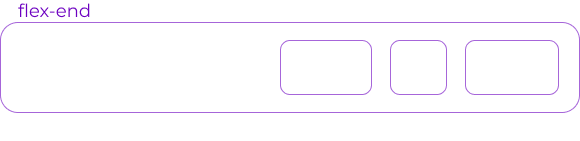
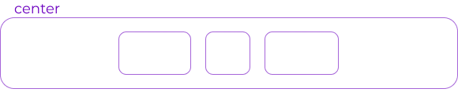
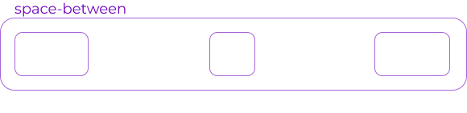
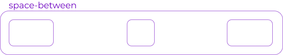
Это свойство определяет выравнивание вдоль главной оси. Оно помогает распределить дополнительный остаток свободного пространства, когда-либо все flex элементы в строке негибкие, либо гибкие, но достигли своего максимального размера. Это также обеспечивает некоторый контроль над выравниванием элементов, когда они переполняют линию.
.container {
justify-content: flex-start | flex-end | center | space-between | space-around |
space-evenly | start | end | left | right ... + safe | unsafe;
}
- flex-start(по умолчанию): элементы сдвинуты в начало flex-direction направления.
- flex-end: элементы сдвинуты ближе к концу flex направления.
- start: элементы сдвинуты к началу writing-mode направления.
- end: элементы сдвинуты в конце writing-mode направления.
- left: элементы сдвинуты по направлению к левому краю контейнера, если это не имеет смысла flex-direction, тогда он ведет себя как start.
- right: элементы сдвинуты по направлению к правому краю контейнера, если это не имеет смысла flex-direction, тогда он ведет себя как start.
- center: элементы центрированы вдоль линии
- space-between: элементы равномерно распределены по линии; первый элемент находится в начале строки, последний элемент в конце строки
- space-around: элементы равномерно распределены по линии с одинаковым пространством вокруг них. Обратите внимание, что визуально пространства не равны, так как все элементы имеют одинаковое пространство с обеих сторон. Первый элемент будет иметь одну единицу пространства напротив края контейнера, но две единицы пространства между следующим элементом, потому что у следующего элемента есть свой собственный интервал, который применяется
- space-evenly: элементы распределяются таким образом, чтобы расстояние между любыми двумя элементами (и расстояние до краев) было одинаковым
Обратите внимание, что поддержка браузером этих значений имеет свои нюансы. Например, space-between никогда не получал поддержку Edge, а start / end / left / right еще нет в Chrome. В MDN есть подробные графики. Самые безопасные значения это flex-start, flex-end и center.
Есть также два дополнительных ключевых слова, которые вы можете связать с этими значениями: safe и unsafe. Использование safe гарантирует, что как бы вы ни занимались этим типом позиционирования, вы не сможете расположить элемент таким образом, чтобы он отображался за пределами экрана (например, сверху) так, чтобы содержимое тоже не могло быть прокручено (это называется «потеря данных»).
align-items
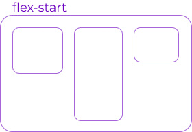
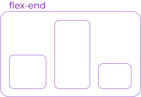
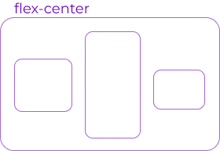
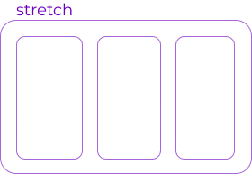
Это свойство определяет поведение по умолчанию того, как flex элементы располагаются вдоль поперечной оси на текущей линии. Думайте об этом как о justify-content версии для поперечной оси (перпендикулярной главной оси).
.container {
align-items: stretch | flex-start | flex-end | center | baseline | first baseline |
last baseline | start | end | self-start | self-end + ... safe | unsafe;
}
- stretch (по умолчанию): растягивать, чтобы заполнить контейнер (все еще соблюдаются min-width / max-width)
- flex-start / start / self-start: элементы размещаются в начале поперечной оси. Разница между ними невелика и заключается в соблюдении flex-direction правил или writing-mode правил.
- flex-end / end / self-end: элементы располагаются в конце поперечной оси. Разница опять-таки тонкая и заключается в соблюдении flex-direction или writing-mode правил.
- center: элементы центрированы по поперечной оси
- baseline: элементы выровнены, по их базовой линии
safe и unsafe ключевые слова модификаторов могут быть использованы в сочетании со всеми из этих ключевых слов (хотя это поддерживается не всеми браузерами), это помогает предотвратить выравнивание элементов таким образом, что содержание становится недоступным.
align-content
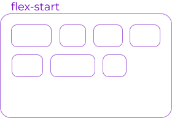
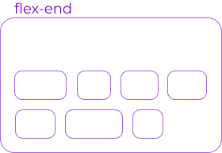
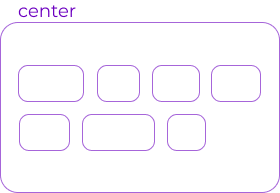
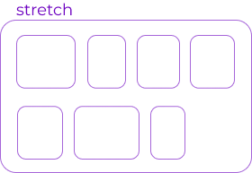
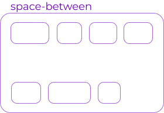
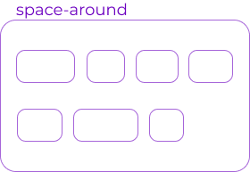
Это свойство выравнивает линии в пределах flex контейнера, когда есть дополнительное пространство на поперечной оси, подобно тому, как justify-content выравнивает отдельные элементы в пределах главной оси.
Примечание: это свойство не действует, когда есть только одна строка flex элементов.
.container {
align-content: flex-start | flex-end | center | space-between | space-around | space-evenly | stretch | start | end | baseline | first baseline | last baseline + ... safe | unsafe;
}
- flex-start/ start: элементы, сдвинуты в начало контейнера. Более поддерживаемый flex-start использует, flex-direction в то время как start использует writing-mode направление.
- flex-end/ end: элементы, сдвинуты в конец контейнера. Более поддерживаемый flex-end использует flex-direction в то время как end использует writing-mode направление.
- center: элементы выровнены по центру в контейнере
- space-between: элементы равномерно распределены; первая строка находится в начале контейнера, а последняя — в конце
- space-around: элементы равномерно распределены с равным пространством вокруг каждой строки
- space-evenly: элементы распределены равномерно, вокруг них одинаковое пространство
- stratch(по умолчанию): линии растягиваются, чтобы занять оставшееся пространство
safe и unsafe ключевые слова модификаторов могут быть использованы в сочетании со всеми из этих ключевых слов (хотя это поддерживается не всеми браузерами), это помогает предотвратить выравнивание элементов таким образом, что содержание становится недоступным.
Свойства для первых дочерних элементов(flex элементы)
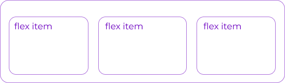
order
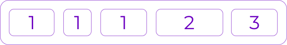
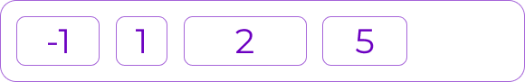
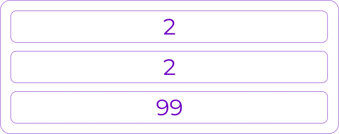
По умолчанию flex элементы располагаются в исходном порядке. Однако свойство order управляет порядком их появления в контейнере flex.
.item {
order: <integer>; /* default is 0 */
}
flex-grow
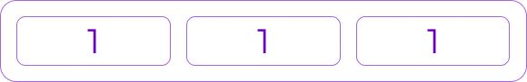
Это свойство определяет способность flex элемента растягиваться в случае необходимости. Оно принимает значение от нуля, которое служит пропорцией. Это свойство, какое количество доступного пространства внутри гибкого контейнера должен занимать элемент.
Если для всех элементов flex-grow установлено значение 1, оставшееся пространство в контейнере будет равномерно распределено между всеми дочерними элементами. Если один из дочерних элементов имеет значение 2, этот элемент займет в два раза больше места, чем остальные (или попытается, по крайней мере).
.item {
flex-grow: &lyt;number>; /* default 0 */
}
flex-shrink
Это свойство определяет способность гибкого элемента сжиматься при необходимости.
.item {
flex-shrink: <number>; /* default 1 */
}
flex-basis
Это свойство определяет размер элемента по умолчанию перед распределением оставшегося пространства. Это может быть длина (например, 20%, 5rem и т.д.) Или ключевое слово. Ключевое слово auto означает «смотри на мое width или height свойство». Ключевое слово content означает «размер на основе содержимого элемента» — это ключевое слово все еще не очень хорошо поддерживается, так что трудно проверить что для него используется max-content, min-content или fit-content.
.item {
flex-basis: <length> | auto; /* default auto */
}
Если установлено значение 0, дополнительное пространство вокруг содержимого не учитывается. Если установлено значение auto, дополнительное пространство распределяется в зависимости от его flex-grow значения.
flex
Это сокращение для использования flex-grow, flex-shrink и flex-basis вместе. Второй и третий параметры (flex-shrink и flex-basis) являются необязательными. По умолчанию это 0 1 auto.
.item {
flex: none | [ <'flex-grow'> <'flex-shrink'>? || <'flex-basis'> ]
}
Рекомендуется использовать это сокращенное свойство, а не устанавливать отдельные свойства. Это сокращение разумно устанавливает другие значения.